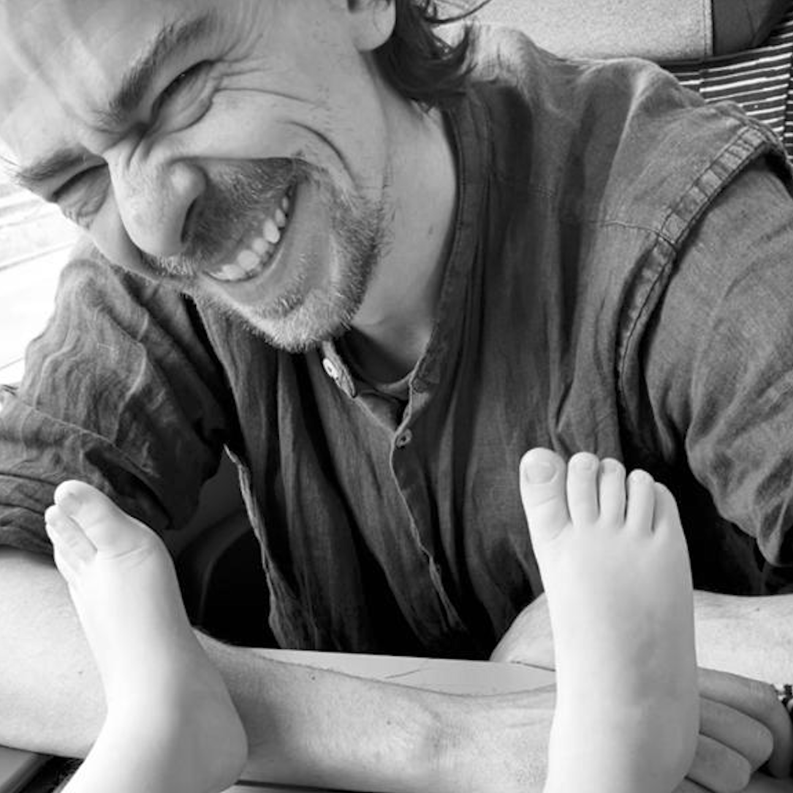

Hi Mom! I create websites now
I've always played with different professions, especially the more artistic ones, first of all having fun and trying to transform my passions into professions.
I have traveled many different path passing from graphic studies to photographic studies through film studios and writing classrooms, meeting professionals, friends and even colleagues. I have always transformed and adapted following my passions and today I can say that I am a graphic designer, director, screenwriter and video maker. And oh yeah, I also take some pictures every now and then.